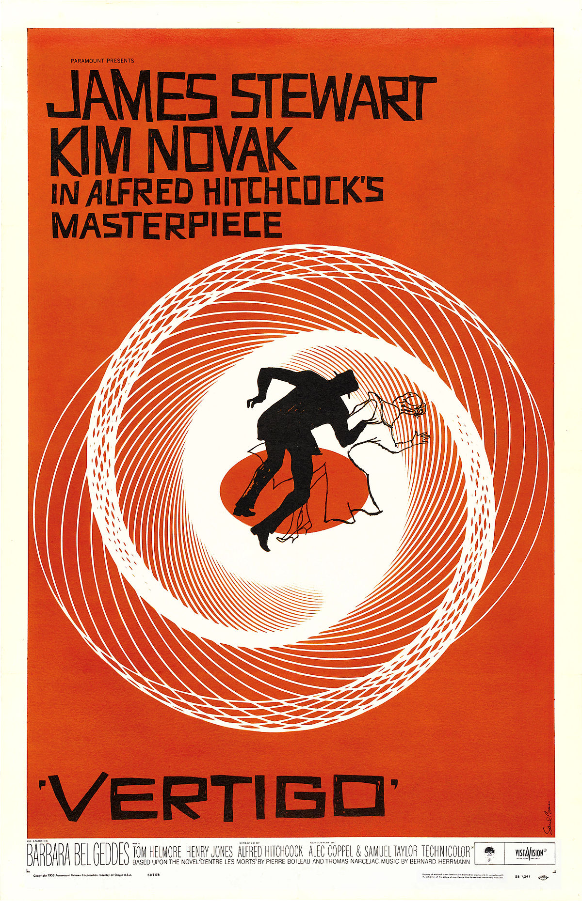
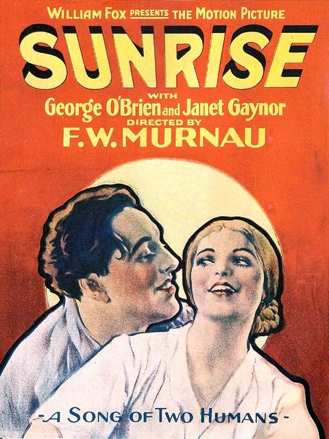
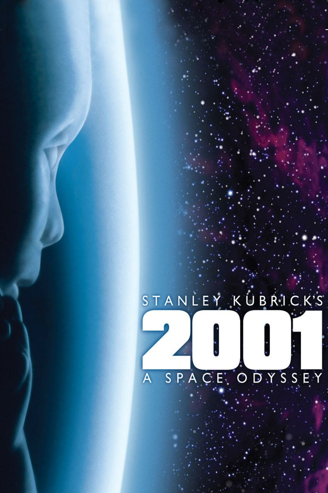

| Rank |
Name |
Director |
Main Cast |
Studio |
Release Year |
Duration |
Poster |
| 1 |
Vertigo |
Alfred Hitchcock |
- James Stewart
- Kim Novak
- Barbara Bel
Geddes
|
Paramount |
1958 |
2h 9m |
 |
| 2 |
Citizen Kane |
Orson Welles |
- Orson Welles
- Ruth Warrick
- Joseph Cotten
|
RKO Radio |
1941 |
1h 59m |
 |
| 3 |
Tokyo Story |
Yasujiro Ozu |
- Setsuko Hara
- Chishu Ryu
- Chieko Higashiyama
|
Shochiku |
1953 |
2h 16m |
 |
| 4 |
The Rules of the Game |
Jean Renoir |
- Nora Gregor
- Paulette Dubost
- Marcel Dalio
|
Gaumont |
1939 |
1h 53m |
 |
| 5 |
Sunrise: A Song of Two Humans |
Friedrich Wilhelm Murnau |
- Janet Gaynor
- George
O'Brien
- Margaret Livingston
|
Fox Film |
1927 |
1h 46m |
 |
| 6 |
2001: A Space Odyssey |
Stanley Kubrick |
- Keir Dullea
- Gary
Lockwood
- Douglas Rain
|
Metro-Goldwyn-Mayer |
1968 |
2h 44m |
 |
| 7 |
The Searchers |
John Ford |
- John Wayne
- Natalie Wood
- Vera Miles
|
Warner Bros. |
1956 |
1h 59m |
 |
| 8 |
Man with a Movie Camera |
Dziga Vertov |
- Mikhail Kaufman
- Yelizaveta Svilova
- Aleksandr Ivanov
|
VUFKU |
1929 |
1h 20m |
 |
| 9 |
The Passion of Joan of Arc |
Carl Theodor Dreyer |
- Renée Jeanne Falconetti
- Antonin Artaud
- Eugène Silvain
| Société Générale des Films |
1928 |
1h 54m |
 |
| 10 |
81/2 |
Federico Fellini |
- Marcello Mastroianni
- Claudia Cardinale
- Anouk Aimée
|
Cineriz |
1963 |
2h 20m |
 |
{kind=link}
{kind=link}
{kind=link}